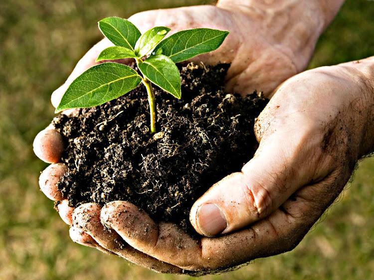
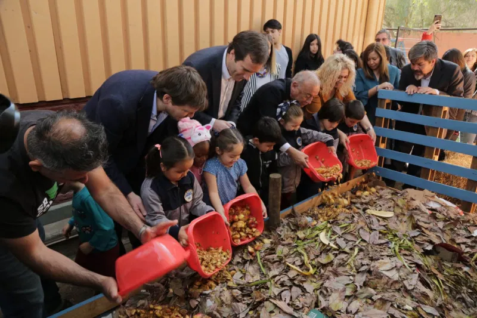

Mucha basura poco reciclaje
Los chilenos producen al año casi el doble de la basura que generan en promedio los países de América Latina, pero apenas reciclan cerca del 10%, por falta de compromiso de la población, que recién ahora parece tomar conciencia sobre la necesidad de un cambio. Cada chileno genera unos 384 kilos de basura domiciliaria al año, muy por encima del promedio de países de América Latina, de 230 kilos, de acuerdo a datos del Ministerio del Medio Ambiente chileno. A eso hay que sumarle los residuos industriales (10,4 millones), sumando en total unas 16,9 millones de toneladas al año. El marcado aumento en la producción de basura está influido por el crecimiento de la población, la producción industrial y bajas tasas de valorización de residuos. A la gente le gusta decir que recicla, pero a la hora de llevarlo a la práctica lo hacen por un rato y después se aburren. Es una falta de compromiso individual de separar nuestros residuos en origen y llevarlos a los puntos limpios.
Pero a nivel social, las cosas avanzan más rápido y comienza a verse una mejor actitud hacia el reciclaje, sobre todo en algunas comunas de Santiago, ciudad que genera 43% de la basura de todo el país. En comunas como Vitacura, Providencia, Ñuñoa o Las Condes se han instalado varios ‘Puntos Limpios’, donde los vecinos pueden llevar sus residuos clasificados. La compañía de distribución eléctrica Chilectra, que alimenta a la mayoría de los hogares de la capital chilena, puso en marcha recientemente un programa de reciclaje que permite a los clientes descontar parte de su boleta a cambio de materiales reciclables. Un sondeo de la Universidad Andrés Bello realizado en 2012 a 1.075 personas, indicó que 41% de los encuestados no tenía el hábito del reciclaje, mientras que un 29% desconocía donde realizar esa actividad. Papeles y cartones son los materiales que más se reciclan en Chile con 474.650 toneladas anuales, le siguen los plásticos (355.394 toneladas), vidrios (292.014 toneladas) y metal (100.665). En total, Chile genera casi 1,3 millones de toneladas, considerando los residuos industriales y domiciliarios.

¿Qué pasa con los residuos orgánicos?
La gran parte del peso de la bolsa de basura (cerca de un 58%) corresponde a residuos orgánicos que pueden ser aprovechados.
Esto tiene incidencia no solo en la valorización, sino también en la vida útil de los rellenos sanitarios. Actualmente en Chile un 78% de los residuos domiciliarios termina en este tipo de instalaciones -el resto va a basureros clandestinos-, y estos ya se están completando: en promedio, su vida útil no sobrepasa los 12 años.
Este 58% de residuos orgánicos es la fracción que genera los principales impactos de la basura; ahí están los olores, los volúmenes, las emisiones de gases de efecto invernadero por la descomposición anaeróbica.

¿Entonces cómo aprovechamos estos residuos?
Hacer compost casero es una actividad para toda la familia una forma perfecta de acercar la naturaleza a los más pequeños de la casa, de transmitir valores de consumo responsable, reciclaje y respeto por el medio ambiente
ComposTate tiene como objetivo incentivar a la gente en sus hogares a realizar compost casero, la cual es una actividad para toda la familia y una forma perfecta de acercar la naturaleza a los más pequeños de la casa. Esto transmite valores de consumo responsable, reciclaje y respeto por el medio ambiente
ComposTate busca recolectar este compost de los hogares de los socios ofreciéndoles incentivos a través de puntos que podrán canjear por premios, para que a su vez ComposTate poder venderlos a agricultores y dar un valor agregado a la agricultura chilenas remplazando el abono industrial por abono orgánico
